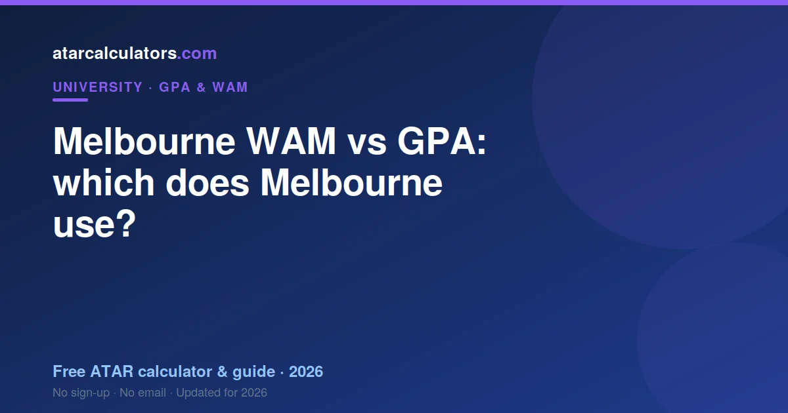

Melbourne uses a Weighted Average Mark (WAM) on your transcript as its main measure, and its H-grade system maps to a 7.0 GPA. WAM averages your exact marks; GPA groups them into bands. For Melbourne’s own honours, awards and progression, WAM is the figure that counts, and any GPA is a derived estimate mainly for external audiences.
Key takeaways
- Melbourne uses WAM on transcripts as its main measure.
- Its H-grades map to a 7.0 GPA.
- WAM keeps exact marks; GPA uses grade bands.
- WAM matters more for Melbourne’s own decisions.
- Treat any GPA as a derived estimate.
- Know both and use the right one for the audience.

Which does Melbourne use?
Melbourne uses a Weighted Average Mark (WAM) on your transcript as its main measure, and its H-grade system maps to a 7.0 GPA. So WAM is the figure Melbourne itself relies on, with GPA as a secondary, derived number.
So the short answer is that WAM is your main Melbourne number, with GPA available too. For Melbourne’s own decisions, such as honours and awards, WAM is the measure that counts.
WAM vs GPA: the difference
WAM, the Weighted Average Mark, averages your exact percentage marks, weighted by credit points. GPA groups marks into grade-point bands, then averages those points on the 7-point scale, also weighted by credit points.
So WAM works in marks out of 100, and GPA works in grade points out of 7. Both are credit-weighted, but WAM keeps more detail, while GPA compresses your marks into bands.
Why the two can differ
Because GPA compresses marks into bands, two students with different marks can share a GPA, if their marks fall in the same bands. WAM would separate them. This is why your WAM and GPA can tell slightly different stories.
For example, a unit at the top of a band and one at the bottom earn the same grade point, so they look identical in GPA but differ in WAM. So a strong mark within a band shows up in your WAM, not your GPA.
What appears on your transcript
Melbourne shows your WAM on your transcript as the main measure. Its H-grades map to a 7.0 GPA, but Melbourne leads with WAM, so a GPA is a derived figure rather than the headline number.
So check your transcript or student portal to see which figures Melbourne shows. Whichever appears, your WAM is the one Melbourne uses for its own purposes.
Turning your WAM into a GPA
To turn your Melbourne results into a GPA, map each grade to its point on the 7-point scale and take the credit-weighted average. This is the same calculation whether or not your transcript shows a GPA. See how to calculate it.
Note that you convert from your grades, not directly from your WAM, since a single WAM figure does not tell you the grade in each unit. So keep your unit grades handy for the calculation.
Which matters more at Melbourne
At Melbourne, your WAM matters more for the university’s own decisions: honours classes, awards and progression are based on WAM. So for anything internal to Melbourne, WAM is the number to watch.
GPA matters more for external audiences that expect it, such as overseas universities. So which one matters depends on who is asking, but for Melbourne itself, WAM leads.
When you need a GPA
You may still need a GPA figure, most often for overseas universities or programs that ask for one. In that case, calculate a GPA from your Melbourne grades using the 7-point mapping, and label it clearly.
For serious international applications, a credential service can map your Melbourne grades to the relevant local scale. So WAM is your Melbourne number, and a GPA is a translation for audiences that expect one.
The practical takeaway
The practical takeaway is simple: lead with your WAM for anything at Melbourne, and calculate a GPA when an external body asks for one. Know both numbers, and use the right one for the right audience.
That way your strong Melbourne results are read correctly, whether by Melbourne itself or by an institution that works in GPA.
Work out your numbers
To know both figures, use our Melbourne GPA calculator for your GPA, and calculate your WAM from your marks. Having both ready means you are prepared whichever a program asks for.
Then lead with the one that fits: WAM at Melbourne, GPA for audiences that expect it.
For overseas applications
If you are applying overseas, your Melbourne results may need expressing as a GPA, or formally converted to a local scale such as the US 4.0. There is no single formula; a credential service maps your grades band by band. See Australian GPA vs the US scale.
So for international applications, calculate a GPA from your grades, label it as being on a 7-point scale, and use a formal evaluation when an institution requires one. Your WAM remains your Melbourne number.
The bottom line
The bottom line is that at Melbourne, WAM leads. Use it for anything internal, from honours to progression, and reach for a GPA only when an external body expects one. Knowing both, and using the right one, keeps your strong results from being misread.
So do not worry that Melbourne leads with WAM rather than GPA; it simply means WAM is the number to watch, with a GPA available when you need to translate your results for a different audience.
Common questions
Does Melbourne use WAM or GPA?
Melbourne uses a WAM on transcripts as its main measure, and its H-grades map to a 7.0 GPA. WAM is the figure Melbourne uses for its own decisions; treat any GPA as a derived estimate.
Does Melbourne give you a GPA on your transcript?
Melbourne shows your WAM on your transcript as the primary measure. Its H-grades map to a 7.0 GPA, but WAM leads, so treat any GPA as a derived figure.
How do I turn my Melbourne WAM into a GPA?
You convert from your grades, not directly from your WAM. Map each grade to its point on the 7-point scale (top grade 7, down to fail 0), then take the credit-weighted average.
Which matters more at Melbourne, WAM or GPA?
For Melbourne’s own decisions, such as honours, awards and progression, WAM matters more. GPA matters more for external audiences that expect it, such as overseas universities.